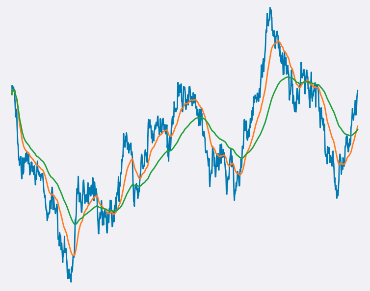
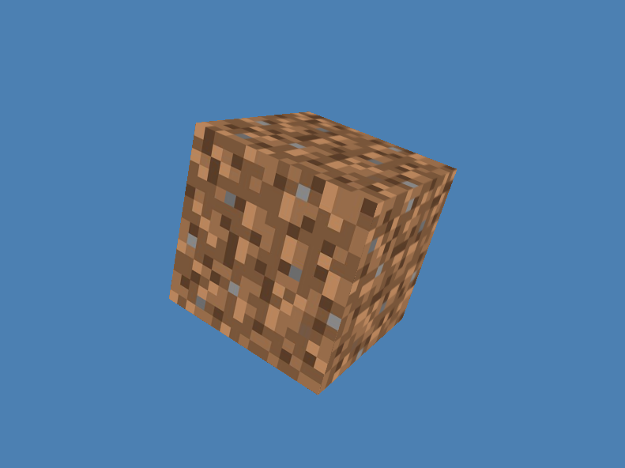

Ethan Mitchell
A quantitative developer publishing articles about mathematics and programming.

Single-pass, exponentially decayed sum and mean in Python
Given a vector of timestamped observations of a process or signal, this article derives single-pass algorithms
to compute the exponentially weighted moving sum (EWMS) and average (EWMA) and implements them in Python using
NumPy and Numba.

Rotating cube from scratch with PyOpenGL
This article explains the mathematics behind 3D graphics and presents a tutorial on rendering
a cube in Python using PyOpenGL.

Single-pass, exponentially decayed covariance in Python
Given vectors of timestamped observations of two jointly distributed random variables, this article
derives & discusses the Python implementation of a single-pass algorithm to compute an exponentially
decayed covariance of these observations.